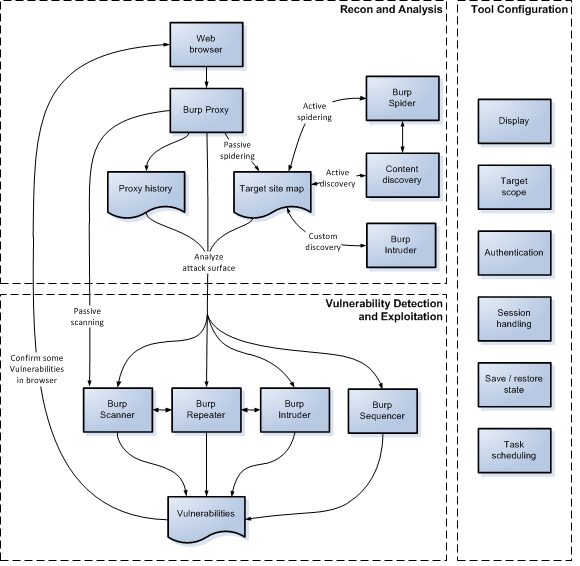

Burp Suiteの使い方
このセクションでは、Web アプリケーションのテストにおけるBurp Suiteの使い方の基本を説明します。Webアプリケーションテストの一般的な手法や方法論については、Burp Suiteの開発者が共著であるThe Web Application Hacker's Handbookを参照してください。
注:Burpを使う前に、Burpの入手と実行、表示設定、ブラウザとBurpを連携させる設定、BurpのSSL CA証明書をブラウザにインストールする必要があります。これらについてヘルプが必要なら、Burp Suite入門を参照してください。
テストワークフロー
Burpは、Webアプリケーションのテスト担当者の作業を支援するよう設計されています。手動および自動の技術を効果的に組み合わせられ、Burpの動作を完全に制御でき、テストする全てのアプリケーションについて詳細な情報と分析を提供します。
一部のユーザーは、Burpをこのように使うのではなく、高速かつ簡単にアプリケーションの脆弱性スキャンを実行したいだけかもしれません。その場合は、ポイント＆クリックスキャナーとしてのBurpの使用を参照してください。
次の図は、Burpのユーザー主導型ワークフローの主要部分の概要です。詳細については、図の各領域をクリックしてください。

情報収集・分析
ProxyツールはBurpのワークフローの中心部に位置します。ブラウザでアプリケーションを巡回している間、Burpは全ての関連情報を収集しており、他のアクションを簡単に開始できます。典型的なテストで、情報収集・分析フェーズには次のタスクが行われます。
- アプリケーションの手動マッピング - リンクを辿る、フォームをサブミットする、複数手順の処理を実行するなど、Burp Proxyを経由するよう設定したブラウザを使って、アプリケーションを手動でマッピングします。このプロセスで、リクエストしたコンテンツがProxy履歴とTargetサイトマップに取り込まれ、レスポンスから推測できる追加のコンテンツ(リンク、フォームなど)が、(パッシブスパイダリングによって)サイトマップ追加されます。リクエストされていないアイテム(サイトマップでグレーで表示される)を確認し、ブラウザでこれらをリクエストします。
-
必要に応じて自動マッピングを実行 - いくつかの方法で、マッピングプロセスの自動化にもBurpが使えます。以下が可能です:
- スパイダリングを実行すると、サイトマップのリクエストされていないアイテムに自動でリクエストができます。このツールを使用する前に必ず、すべてのSpider設定を確認してください。
- コンテンツ探索を使用すると、巡回やSpiderが見つけたどのコンテンツからもリンクされていない、追加のコンテンツを探し出せます。
- Burp Intruderを使用すると、一般的なファイルとディレクトリーのリストを順番にアクセスする、カスタム探索ができます。
- アプリケーションの攻撃経路の分析 - マッピングプロセスでは、アプリケーションについて収集した全ての情報を、Proxy履歴やTargetサイトマップへ取り込みます。どちらのリポジトリにも、含まれている情報の解析を手助けする機能や、アプリケーションが晒している攻撃経路を評価する機能があります。さらに、Burpの対象解析を使用すると、攻撃経路の範囲やアプリケーションが使用している様々な種類のURLを見つけられます。
ツールの設定
対象アプリケーションに応じた動作をBurpにさせるために必要な様々な設定オプションがあり、テストの各段階で使用する必要があります。例:
- 表示 - HTTPメッセージを表示するフォントと文字コードや、Burp自身のUIフォントが設定できます。
- ターゲットスコープ - 今注目し攻撃をしようとしているアイテムをターゲットスコープに設定します。テストの初期段階で設定すべきで、Proxy履歴やTarget サイトマップに表示されるアイテム、Proxyがインターセプトするメッセージ、巡回やスキャンされるメッセージを制御できます。
- 認証 - アプリケーションサーバーがプラットフォームレベル(HTTP)認証を使用している場合、Burpが自動的に認証するよう設定します。
- セッションハンドリング - 多くのアプリケーションには、セッション終了応答、リクエストトークン、状態が維持された多段階のプロセスのような、自動または手動テストを実行しづらくする機能があります。セッションハンドリングルールとマクロを組み合わせて、これらの状況をシームレスに対応できるようBurpを設定できます。
- 状態の保存と復元 - Burpの現在の状態をいつでも保存でき、後で復元もできます。
- タスクスケジューリング - 指定した時間帯だけテストをするよう、決まった時間や間隔でタスクをスケジュールするようBurpを設定できます。
脆弱性の検出とエクスプロイト
対象アプリケーションの情報収集と分析、必要なBurpの設定が終わったら、アプリケーションの脆弱性調査を開始できます。この段階では、異なるツール間で個々のリクエストを受け渡してBurpの様々なツールを併用し、一部のテストではブラウザに戻りながら、様々なタスクを実行すると最も効果的です。Burp全体で、コンテキストメニューを使用すると、ツール間のアイテムの受け渡しや他のアクションが実行できます。
Burpのデフォルト設定で、Proxyを通過した全てのリクエストレスポンスにライブパッシブスキャンが自動的に実行されます。アプリケーションを積極的に調査する前から既に、詳細な調査に裏付けられた問題点が登録される場合があります。
Burpのツールは様々な方法で使用でき、積極的に脆弱性をテストするプロセスをサポートします。様々な種類の問題点における例を挙げます:
-
入力値ベースのバグ - SQLインジェクション、クロスサイトスクリプティング、ファイルパストラバーサルのような問題で、様々な方法でBurpを使用できます:
- Burp Scannerでアクティブスキャンを実行できます。Burpの任意の場所でアイテムを選択し、コンテキストメニューからスキャンを開始できます。Proxyを通過した全てのスコープ内リクエストにライブアクティブスキャンをするよう設定もできます。
- Burp Intruderで、独自のテスト文字列やペイロードポジションを指定して、ファジングが実行できます。
- 個々のリクエストをBurp Repeaterに送信し、手動でリクエストを編集し何度も再送信できます。
- 一部の種類のバグを発見した場合には、Burp Intruderで積極的に攻撃ができます。例えば、SQLインジェクション脆弱性を攻撃するには、多くの場合再帰検索ペイロードを使用します。
-
ロジックと設計上の欠陥 - クライアント側のコントロールを安全に使用していない問題、アカウントロックアウトの欠如、多段階処理で重要な処理を省略できる問題などは、通常手動で作業する必要があります:
- 典型的には、Proxy履歴を詳細に評価し、調査する関連リクエストを特定します。
- 予期せぬリクエストによるアプリケーションの挙動を調査するには、Burp Repeaterで個々のリクエストを発行するか、Proxyインターセプトをオンにしてブラウザを使用しながらその場でリクエストを編集します。
- Burp Intruderを使用して、ロジックや設計の欠陥を積極的に攻撃できます。例えば、有効なユーザー名の列挙、パスワード推測、セッショントークンやパスワードリカバリトークンの推測、あるいは同一リクエストを単に大量再送信(ペイロードなしタイプを使用)するために、Intruderが使用できます。
- ロジックや設計の欠陥を確認後、Burp Proxyの検索/置換機能やセッションハンドリングルールを使用してリクエストを機械的に変更し、積極的に攻撃ができます。
-
アクセス制御の問題 - Burpには、アクセス制御の脆弱性をテストする際に便利な機能があります。
- あるユーザーがアクセスでき他のユーザーができない機能の特定、高権限のユーザーだけにアクセスが制限されている機能に低権限のユーザーがアクセスできるかのテスト、同じタイプの2人のユーザーがアクセスするデータを分離するために使用している識別子の探索など、様々なタスクでサイトマップ比較機能が使用できます。
- 各ブラウザごとに(異なるポートを使用する)Burp Proxyリスナーを分離すると、異なるブラウザを使用し異なるユーザーコンテキストでアプリケーションにアクセスできます。追加のProxy履歴ウィンドウを(コンテキストメニューから)開き、各ウィンドウでディスプレイフィルターを設定すると、特定のプロキシーリスナーが受信したアイテムのみを表示できます。各ブラウザでアプリケーションを使用すると、各履歴ウィンドウには関連するユーザーコンテキストのアイテムだけが表示されます。次に、(コンテキストメニューから)"現在のブラウザセッションでリクエスト"機能を使用すると、ブラウザ間でリクエストを切り替え、ブラウザのユーザーコンテキストでどのように処理されるか判断できます。
- 多くの権限昇格の脆弱性は、アプリケーションがユーザーパラメーター内にユーザー識別子を渡し、現在のユーザーコンテキストによらずその識別子で権限を特定している場合に発生します。このタイプの脆弱性を攻撃するには、 Burp Intruderで(例えば、数値やカスタムイテレーターペイロードタイプを使用して)適切な形式の識別子を一通り送信し、抽出grepアイテムを設定し、アプリケーションのレスポンスからユーザー固有の気になるデータを取得します。
-
その他の脆弱性 - その他の種類の脆弱性を調査する際に発生するほぼ全てのタスクで使用できる機能がBurpにはあり、多くは自動化ができます。例:
- 情報漏洩問題は、対象のサイトマップで確認でき、検索やコメント検索機能が支援します。
- CSRF脆弱性が特定できた場合、CSRFジェネレーターを使用するとHTMLで攻撃の概念実証(proof-of-concept)を素早く生成でき、"ブラウザでテスト"機能を使用してブラウザに攻撃を読み込ませ、ブラウザの結果とProxy履歴を確認して攻撃が成功したか確認できます。
- Burp Sequencerを使用すると、アプリケーションのセッショントークンを解析し、その乱数品質を評価できます。
- セッショントークンやその他の種類のパラメーターが暗号化されている場合、Burp IntruderのビットフリッパーやECBブロックシャッフルペイロードタイプを使用すると、アプリケーションが復号した際に意味のあるデータになることを期待して、暗号化されたデータを手当たり次第変更ができます。
- 独自のBurp拡張を書くと、より特化した、またはカスタマイズされたタスクを実行できます。
続きを読む
Burpの全ツールと機能、Burpでテストする際の一般的なワークフローについて、豊富なドキュメントがあります。
Burpのメインツールの詳細については、次のリンクを参照してください: